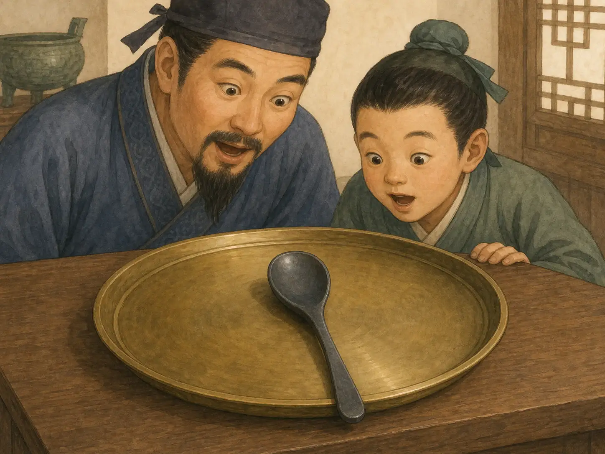

指南针为什么总能找到路？
Why Can a Compass Always Find the Way?
Page 1
在海上，最怕找不到方向
At Sea, the Scariest Thing Is Losing Direction

When sailors could not see land or stars, their biggest worry was not knowing which way to go.
在很久以前，海上的路并不好找。天气一变，太阳被云挡住，晚上星星也看不见，船上的人就会紧张起来。
在陆地上迷路，你还有可能走回头路。可是在海上，方向一错，整条船都可能越漂越远。
所以人们一直想找一种可靠的小东西，能在看不清路的时候告诉大家: 该往哪边走。
Long ago, it was not easy to find your way at sea. When clouds covered the sun and stars disappeared at night, sailors grew nervous.
If you get lost on land, you may still be able to turn back. But at sea, one wrong direction can carry a whole ship farther and farther away.
So people wanted a reliable little tool that could say, even when the way was hard to see: this is the direction.
Page 2
最早让人惊讶的，是一把勺子
The First Surprise Was a Spoon

People discovered that lodestone could turn by itself, and they shaped it like a spoon to see which way it would stop.
很早以前，人们发现有一种石头很特别。你把它放好，它会慢慢转过去，好像自己记得一个方向。
后来，人们把这种磁石磨成勺子的样子，放在光滑的盘上。勺子转一转，最后勺柄会停向南方。
这说明古人很早就知道，磁石可以帮人认方向。只是那时候的工具还不够轻，也不够方便。
Long ago, people found a special kind of stone. If you placed it carefully, it would slowly turn, as if it remembered a direction all by itself.
Later, people shaped this lodestone like a spoon and set it on a smooth plate. After turning, the handle would come to rest pointing south.
That showed that people in ancient China already knew that magnetism could help with direction. But the tool was still not light or handy enough.
Page 3
后来是一根更灵的针
Later Came a Better Needle

Later, people learned how to make a needle remember direction. Floating on water, it settled down and became a trusted helper on ships.
后来，工匠们发现，铁针也可以被“教会”记住方向。它比那把勺子更轻，也更灵活。
把针放在水上，或者让它轻轻悬起来，它就会慢慢稳住。船摇来摇去，它也还是会努力指回那个固定的方向。
这就是为什么指南针后来那么重要。它不吵，也不发光，可是在最容易慌的时候，它能安安静静地告诉你路在哪里。
Later, craftspeople found that an iron needle could also be taught to remember direction. It was lighter than the spoon and much easier to use.
When the needle floated on water or hung lightly, it slowly settled into place. Even when a ship rocked back and forth, it kept trying to point the same way.
That is why the compass became so important. It did not shine or make noise, but when people were most likely to panic, it quietly showed them the way.
小小的指路人
A Tiny Guide
指南针厉害，不是因为它看起来神奇，而是因为它真的能帮人找到路。
一根小小的针，让很多船敢去更远的海上，也让世界变得更大了一点。
The compass is not amazing just because it looks mysterious. It is amazing because it really helps people find the way.
A tiny needle helped many ships travel farther, and it made the world feel a little bigger.